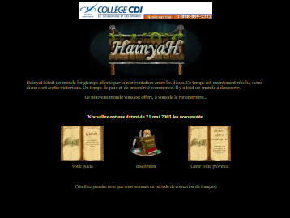
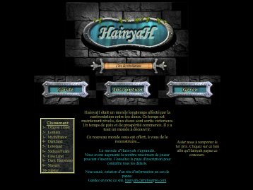
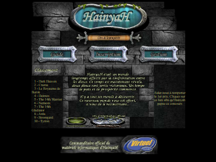
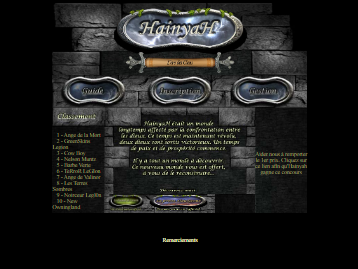
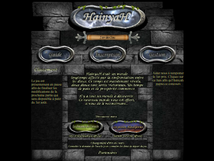
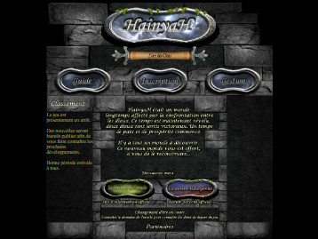
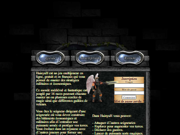

L’accueil au fil des ans
Chaque visage que HainyaH a montré à ses visiteurs de 2003 à 2016, reconstitué à partir des captures de la Wayback Machine : la page d’accueil, le portail de connexion, le domaine de l’Oracle et Domination. Cliquez sur une page pour l’ouvrir. Les boutons et les formulaires ne mènent plus nulle part; le lien vers le guide mène au guide archivé.
La page d’accueil
hainyah.com, la porte d’entrée du jeu.

mai 2003Le premier accueil
juin 2004Les boutons bleus
septembre 2004Le mur de pierre
décembre 2005La page de 2005 et 2006
juin 2007Changement d’ère
juillet 2010La page de 2007 à 2012
décembre 2012L’Ère des Châtiments, jusqu’en 2016Le portail
La page de connexion, « la porte d’accès à votre royaume ».
Le domaine de l’Oracle
hainyah.carrefourpro.com : les nouvelles, les liens, le Privilège et l’Oracle.
Domination
La variante compétitive du jeu, avec son propre accueil et son propre portail.